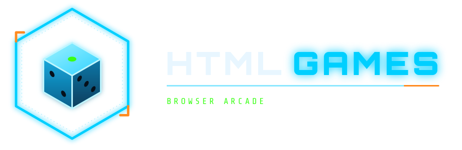

Meine HTML-Spiele
Direkt im Browser spielen. Keine Installation nötig.
Wortgitter
Das Buchstaben-Legespiel nach Scrabble-Regeln: Wörter auf das 15×15-Brett legen, Prämienfelder nutzen, mit Wörterbuch auf Deutsch oder Englisch. 2 bis 4 Spieler, gegen Computer oder online.
Spielen →Helluva Tycoon
Das Immobilien-Brettspiel im Helluva-Boss-Stil: Spiele als Blitzø, Moxxie, Millie, Loona, Stolas oder Fizzarolli, kaufe Orte aus den Ringen der Hölle, baue, handle und treibe die anderen in den Ruin. 2 bis 6 Spieler, gegen Computer oder online. Inoffizielles Fan-Spiel.
Spielen →Heldengilde
Strategisches Kartenspiel: Stelle eine Gruppe aus Helden zusammen, würfle für ihre Fähigkeiten, besiege Monster und funke den anderen dazwischen. 2 bis 6 Spieler, gegen Computer oder online.
Spielen →Auf & Ab
Kooperatives Kartenspiel: Legt gemeinsam alle Zahlen von 2 bis 99 auf zwei aufsteigende und zwei absteigende Reihen, ohne Zahlen zu verraten. 1 bis 5 Spieler, mit Computer-Teamkollegen oder online.
Spielen →Rummikub
Der Brettspiel-Klassiker mit Zahlensteinen, auch im Mehrspielermodus.
Spielen →Zollkreuzwort
Ein Kreuzworträtsel rund um den Zoll.
Spielen →Mädn Teams
Mensch ärgere dich nicht im Team auf dem doppelt so großen Brett (80 Felder): Wer gegenüber sitzt, ist dein Partner, ein Team muss 8 Figuren ins Ziel bringen. 4 oder 8 Spieler, gegen Computer oder online.
Spielen →Mensch ärgere dich nicht
Der Klassiker für 2 bis 4 Spieler, mit oder ohne Computer-Gegner.
Spielen →Farbchaos
Das beliebte Farbkarten-Spiel für 2 bis 4: Karten nach Farbe oder Zahl ablegen, Aussetzen, Richtungswechsel, Plus-Karten und UNO rufen. Gegen den Computer oder online.
Spielen →Hanafuda Koi-Koi
Das japanische Blumenkarten-Spiel: Passende Monate sammeln, Kombinationen bilden und entscheiden, ob du weiterspielst (Koi-Koi) oder kassierst. Gegen den Computer oder online, mit 3D-Ansicht.
Spielen →Puzzle
Eigenes Foto oder Bilder aus der Galerie, 6 bis 150 Teile, verschiedene Teileformen, Drag & Drop mit Animationen. Wahlweise flach in 2D oder als 3D-Tisch mit Schatten.
Spielen →Tetris
Der Klassiker mit Hold, Vorschau, Schatten-Stein, Wandtritten und Level. Mit Tastatur oder Touch.
Spielen →Tron
Lichtrenner-Duell in der Neon-Arena: Lenke dein Bike, schneide den Gegnern den Weg ab und fahre nie in eine Spur. Gegen 1 bis 3 Computer, zu zweit an einer Tastatur oder online mit bis zu 4 Spielern. Mit Turbo und 3D-Ansicht.
Spielen →Poker
Texas Hold’em ohne Limit am 3D-Tisch. Bis zu 6 Spieler, gegen Computer oder online.
Spielen →Blackjack
Schlage den Geber am 3D-Tisch. Bis zu 5 Spieler, gegen Computer oder online.
Spielen →Vier gewinnt
Vier in einer Reihe. Gegen den Computer (3 Stufen) oder zu zweit.
Spielen →Mühle
Setzen, ziehen, springen: bilde Mühlen und nimm dem Gegner die Steine.
Spielen →Schiffe versenken
Finde und versenke die gegnerische Flotte, bevor er deine erwischt.
Spielen →Chomp Arena
Neon-Labyrinth für bis zu 4 Spieler: zusammen gegen die Geister (mit Kristall-Sync) oder gegeneinander mit eigenen Räumen und Arena-Kampf.
Spielen →Neun Welten
Deckbau und Einsetzen in der Welt der nordischen Sagen: Gefolgsleute zu Asen, Riesen, Zwergen und Walküren schicken, Karten kaufen, Schlachten gewinnen. 2 bis 4 Spieler, gegen den Computer oder online.
Spielen →Domino
Das klassische Legespiel für 2 bis 4 Spieler mit Vorrat, Blockade und Punktewertung. Gegen den Computer oder online.
Spielen →Billard
8-Ball mit echter Kugelphysik: zielen, Stärke wählen, stoßen. Mit Fouls, freier Weißer und Zielhilfe. Gegen den Computer oder online zu zweit.
Spielen →Wackelturm
Der Klötzchenturm in 3D für 2 bis 4 Spieler: Klotz wählen, mit ruhiger Hand herausziehen, oben auflegen. Wer den Turm umwirft, verliert.
Spielen →Chomp Klassik
Das klassische Labyrinth für einen Spieler: alle Punkte fressen, vier Geister mit eigenem Verhalten, große Punkte, Früchte, Tunnel und steigende Level.
Spielen →Fixer Fritz
Brecher Boris zertrümmert das Haus, Fritz repariert die Fenster. Klettere von Fenster zu Fenster, weiche den Ziegeln aus und schnapp dir Kuchen für kurze Unverwundbarkeit.
Spielen →